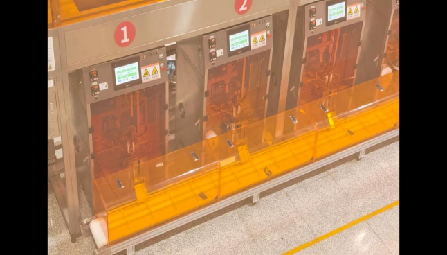
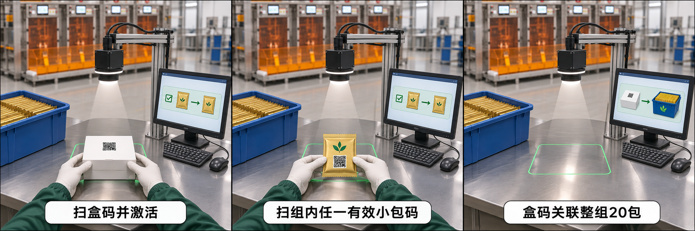
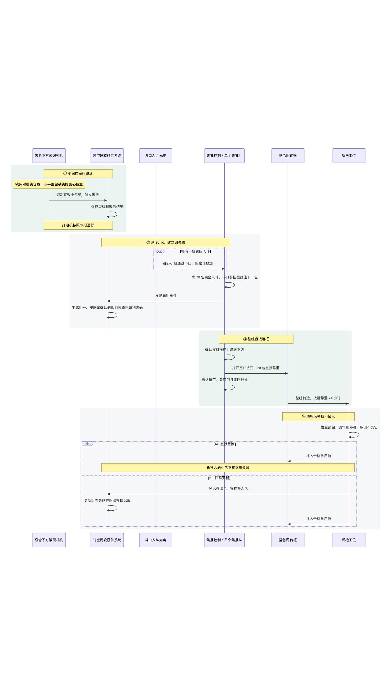
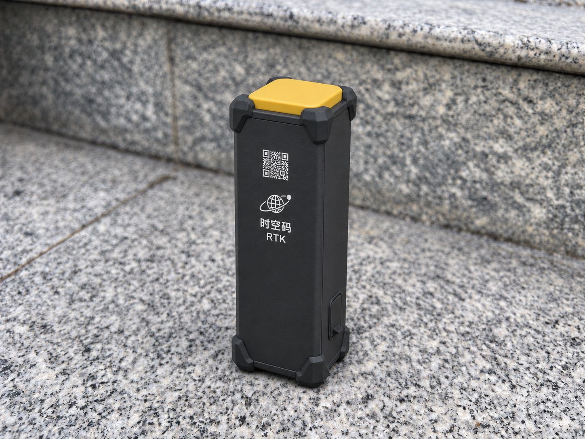
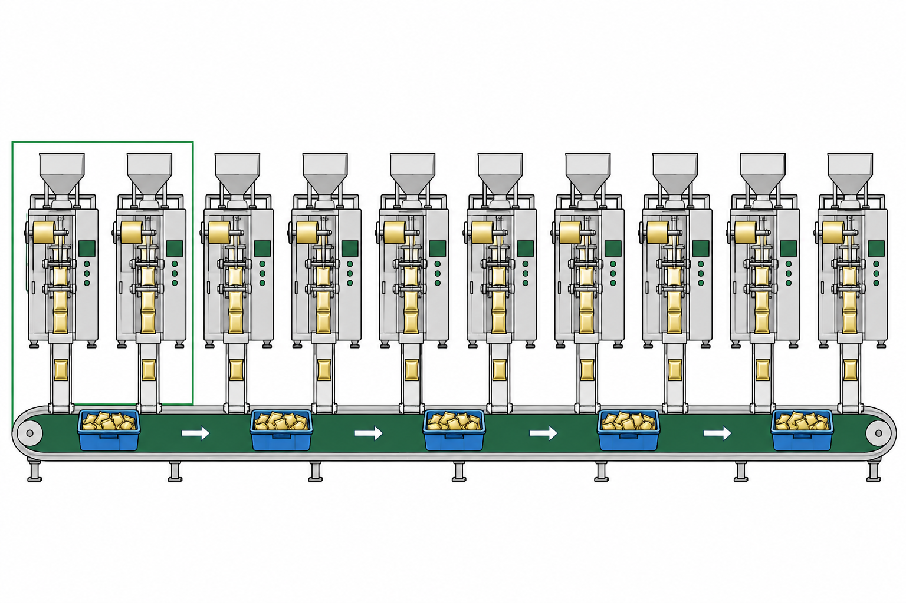

沿用原打泡机和共用主带。袋仓识码时绑定生产位置与时间，出料按实物每 20 包集批，整组直接落入蓝框。

每个包装工位使用一套时空码硬件系统。工业相机固定在台面上方，向下对准扫码区，黑色黄顶的北斗定位授时终端固定在相机支架侧面。

读码激活与实物计数分别记录。系统在满组后关联已识别袋码，码与实物的组归属用编号实袋核对。


将终端贴装或固定在经现场确认的机架位置，建立终端与产线、工位的对应关系。相机识别有效小包码后，时空码软硬件系统读取对应工位的位置和授时信息，触发激活并保存结果。
试点核对安装点的接收质量、供电通信和时间同步状态。设备数量、安装方式及费用单列确认。
每套包含自研北斗时空定位终端、工业相机及处理主板。每条产线至少 3 套，打泡机侧 1 套，包装侧基准 2 套。包装侧每个同时作业的人员工位配置 1 套，超过两人按实际并行工位增加。

试点范围为一台打泡机、两个包装工位，共 3 套时空码硬件。按单台日产 25,000 小包、每筐 20 包、静置 24 小时核算。以下为内部预算估算，实际按配置及报价确认。
试点预算约 14 万元。筐价及 20% 周转余量为测算假设，结合质检、装盒与回筐周期确认。货架按现场已有设施复用，新增货架和年度运维另计。服务器、算力、存储、备份及网络由八马提供并承担费用，实施方负责提出资源需求和部署适配。